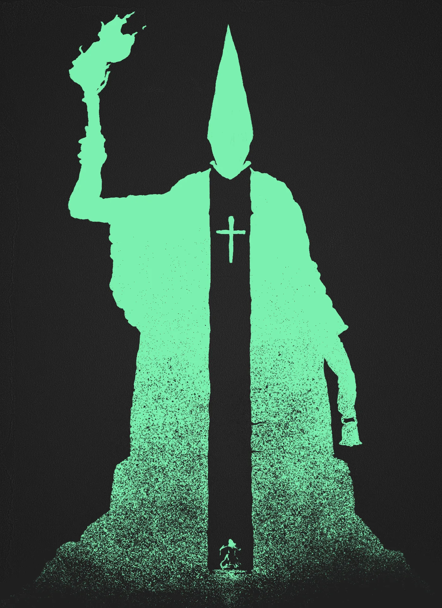
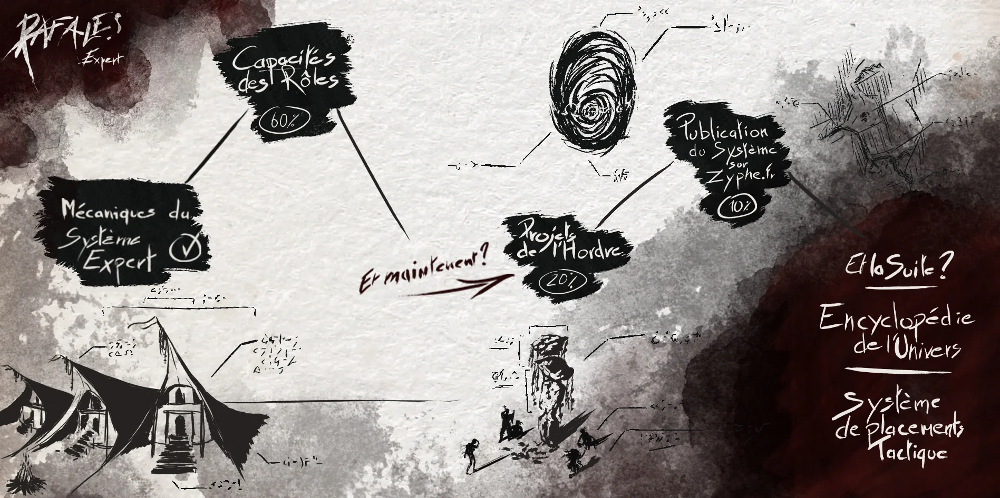
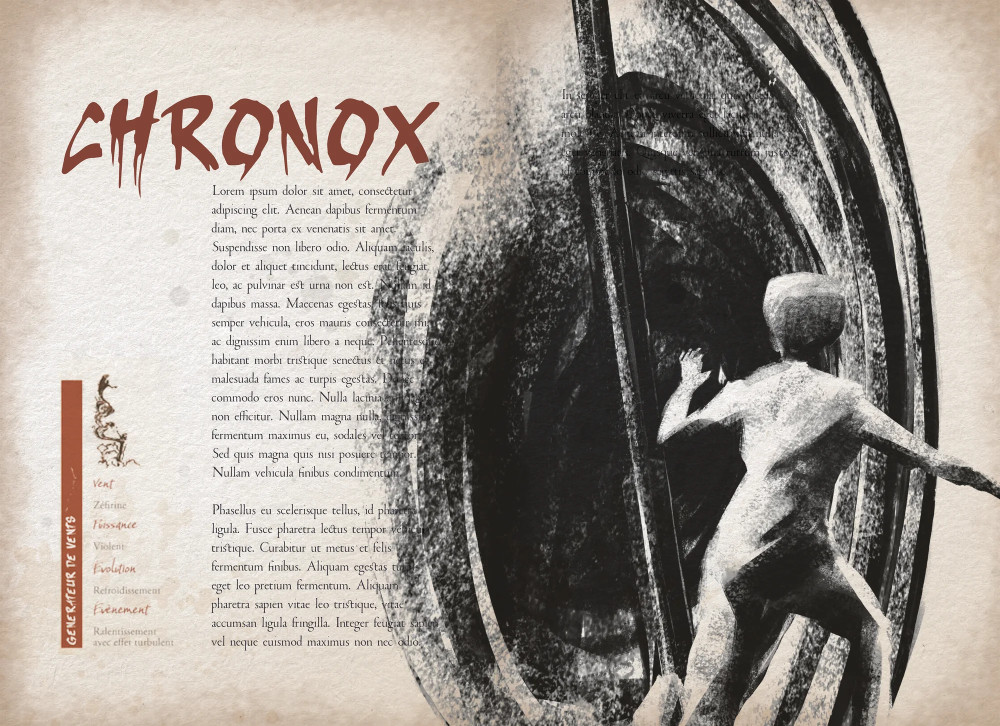
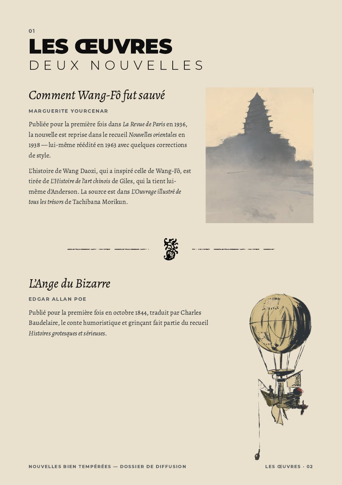

Nouvelles Bien Tempérées
Création vidéo d'un spectacle adapté de Yourcenar (Comment Wang-Fô fut sauvé) et de Poe (L'Ange du Bizarre) : décors animés projetés sur scène (paysages d'estampe, colonnade), puis teaser du spectacle.
Portfolio
Illustration · Graphisme · Vidéo & motion
J'illustre, je mets en page et je fais bouger les images, de l'encre numérique à la scène de théâtre. Fondateur des Éditions du Zyphe, j'ai donné forme à l'univers de La Horde du Contrevent en jeu de rôle.

I
Création vidéo pour la scène, teasers, motion design pour l'événementiel.
Création vidéo d'un spectacle adapté de Yourcenar (Comment Wang-Fô fut sauvé) et de Poe (L'Ange du Bizarre) : décors animés projetés sur scène (paysages d'estampe, colonnade), puis teaser du spectacle.
Charte graphique et motion design : typographie animée, photos d'artistes détourées en bichromie, transitions géométriques, pensé pour les réseaux sociaux.
Réalisation, montage et motion design : carte animée de l'Yonne, typographie ancienne, pictogrammes médiévaux mis en mouvement.
II
Dessin numérique sur tablette, sans IA : encre, pinceau sec, grain et pointillisme.




III
Livres de jeu, typographie, dossiers de diffusion : InDesign et HTML.



IV
zyphe.fr : site et boutique des Éditions du Zyphe, conçus et développés avec des outils d'IA, comme ce portfolio.
V
Diplômé en cinéma-audiovisuel (Université Sorbonne Nouvelle) et en biens culturels (Università di Roma Tor Vergata), je dirige depuis 2023 les Éditions du Zyphe, qui publient RAFALES, l'adaptation officielle en jeu de rôle de La Horde du Contrevent d'Alain Damasio. J'y illustre, mets en page et conçois la communication.
En parallèle, je réalise en freelance des créations vidéo pour le spectacle vivant et du motion design pour des événements culturels.
Une affiche, une identité, un teaser, une vidéo de scène ou un livre à mettre en page ?